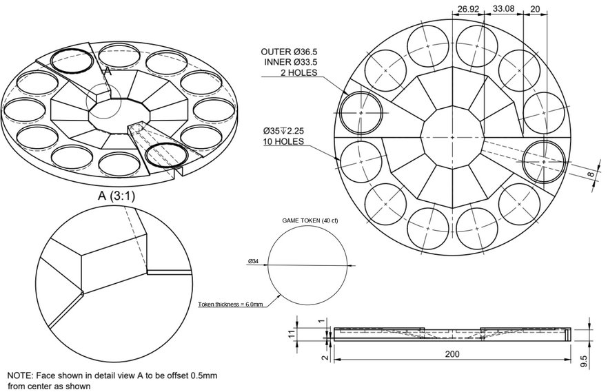
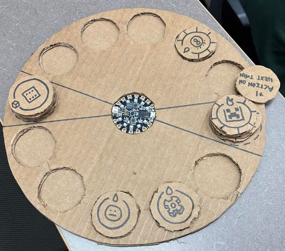
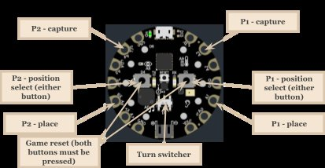

Perfectly Balanced

Overview
Our group wanted to create a game that combined strategy and luck and appealed to players of any age who can understand the rules. We started from a lack of sustainability education in engineering classes and drew inspiration from popular trading-card and fantasy games. The final product is a circular token-based strategy game for two players. Lights from a Circuit Playground Express (CPX) mounted in the center of the board show the level of each token around the edge.
Requirements
The wants were affordability (a target price of $25 to $30), replayability, and aesthetic appeal. The constraints were:
- Laser-cut birch wood components
- A PLA 3D-printed board
- A working CPX for LED feedback
- Printing in 15 hours or less, within 300 x 200 x 200 mm
- Assembled and play tested by mid-November
Concept generation and selection
We developed three concepts: Dual Circuit, a 2v2 deckbuilding card game; Perfectly Balanced, a two-player token placement and capture game; and Natural Disaster, a 2 to 4 player path game with random events triggered by the CPX.
Because the concepts were so different, we used a weighted decision matrix. Replayability carried the most weight, followed by ease of play, with engineering learning potential given a small weight.
| Metric (weight) | Dual Circuit | Perfectly Balanced | Natural Disaster |
|---|---|---|---|
| Replayability (50%) | 3 | 3 | 2 |
| Ease of play (30%) | 2 | 3 | 4 |
| Depth and complexity (15%) | 3 | 4 | 2 |
| Engineering learning potential (5%) | 3 | 3 | 1 |
| Score | 2.7 | 3.25 | 2.55 |
Design
The design has two main parts. The board is 3D printed in PLA with a circular pattern of twelve holes: ten for tokens and two for each player's token pile. A depression in the center holds the CPX, and a tunnel under the thickest part of the board routes its power cord. The 40 tokens are laser cut from birch wood, with 0.5 mm of tolerance around their edges and 3.75 mm of exposed height when placed. The board size limit also set how large the tokens and their graphics could be.

Prototyping
We built the first prototype from scrap cardboard in the Makerspace, with a small set of tokens and the CPX we would use in the final design. It led to several changes: twelve spots instead of the planned fourteen, a bottom piece so tokens and the CPX cannot fall out, shallower token holes for easier handling, and a way to power the CPX while it is mounted on the board. The final board and tokens were made at the Pearson Hall Makerspace.

How it plays
On each turn a player either places a token or captures an opponent's token directly across the board. Tokens have a type (fire, water, grass, electric, or normal) and a level, and the CPX shows each level as a light color. Players use the CPX touch pads to place, capture, and pick positions, and the tokens can rank up over time.

Testing and results
- Token fit: tokens fit the slots with little friction and were easy to place and remove.
- CPX integration: the lights and touch inputs worked reliably across all token positions.
- Durability: the board and tokens showed no cracks or deformation after repeated use and drops.
- Surveys: the replayability and aesthetics targets were not met. We think this was partly because very few people filled out the survey (5 responses) and not many were able to play test the game.
- Cost: our cost estimate came to $132.25 per unit, far above the $25 to $30 target. Laser cutting was $37.01, 3D printing was $80.26, and electronics were $14.98. The 3D-printed board was the largest cost.
Path forward
The main issue is cost, so the next step is to reduce the board's volume and print time, or to print fewer tokens. If that can be solved, we would:
- Speed up the CPX light response and make the colors more distinct.
- Add engraved controls on the board and hide the power supply.
- Make the token text larger and easier to read.
- Add token variety, such as tokens with no special ability or the ability to reach tokens not directly across.